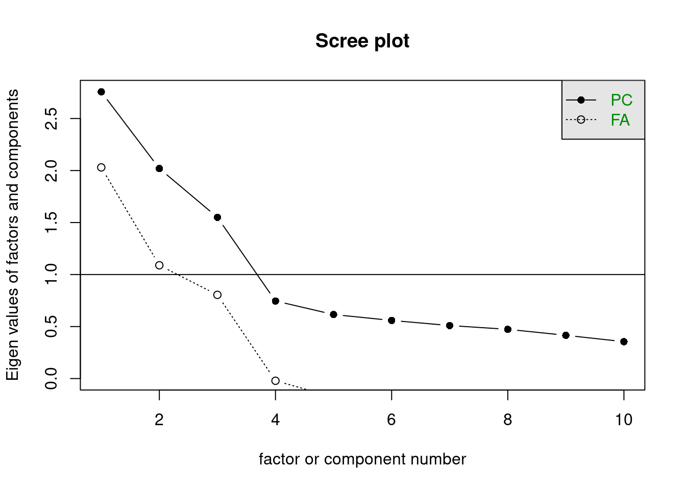
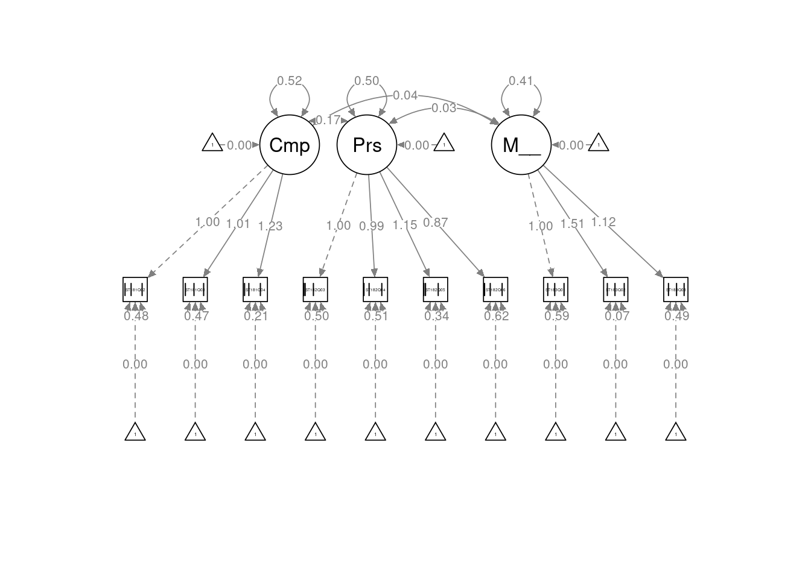
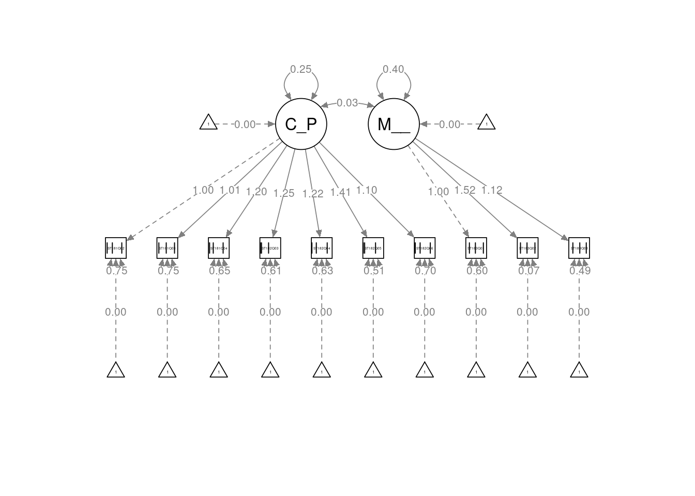

# Librerias
library(readxl) # Para leer los excels
library(dplyr) # Para tratamiento de dataframes
library(caret) # train/test data
library(psych) # test mardia /kmo
library(ggcorrplot)
library(GPArotation) # Para poder rotar los factores
library(lavaan) # cfa
library(semPlot) # diagrama cfaReducción Dimensionalidad - Análisis Factorial: pisa_factorial
Introducción
A continuación se expondrá como llevar a cabo una Reducción de Dimensionalidad utilizando un Análisis Factorial. Para ello se utilizará un dataset sobre el que se irán explicando los sucesivos pasos a llevar a cabo.
dataset
En este cuaderno vamos a analizar el dataset llamado pisa_factorial.xlsx. Este dataset presenta un conjunto de datos relativos a la la prueba PISA del año 2018. El objetivo es realizar un Análisis Factorial a partir de los microdatos.
Concretamente en este dataset tenemos las siguientes variables (La escala de respuesta para estas son 1 - Totalmente en desacuerdo, 2 - En desacuerdo, 3 - De acuerdo y 4 - Totalmente de acuerdo):
- ¿Hasta qué punto estás de acuerdo con las siguientes afirmaciones sobre ti mismo?
- ST181Q02HA: Disfruto trabajando en situaciones que requieren competir con los demás.
- ST181Q03HA: Es importante para mí hacerlo mejor que los demás al realizar una tarea.
- ST181Q04HA: Me esfuerzo mucho cuando estoy compitiendo contra los demás.
- ¿Hasta qué punto estás de acuerdo con las siguientes afirmaciones sobre ti mismo?
- ST182Q03HA: Me siento satisfecho cuando me esfuerzo todo lo que puedo.
- ST182Q04HA: Cuando inicio una tarea continúo hasta terminarla.
- ST182Q05HA: Cuando hago algo, parte de mi satisfacción se debe a que he mejorado mis resultados anteriores.
- ST182Q06HA: Si algo no se me da bien, prefiero seguir esforzándome para mejorar, en lugar de hacer otra cosa que sí se me da bien.
- ¿Hasta qué punto estás de acuerdo con las siguientes afirmaciones?
- ST183Q01HA: Cuando me he equivocado, me preocupa lo que otras personas piesen de mí.
- ST183Q02HA: Cuando me he equivocado, me preocupa no tener el talento suficiente.
- ST183Q03HA: Cuando me he equivocado, dudo sobre mis planes para el futuro.
Descripción del trabajo a realizar
Se pretende hacer un Análisis de Reducción de la Dimensionalidad empleando el procedimiento de Análisis Factorial.
Hacer un análisis exploratorio.
Dividir datos en dos partes
Análisis Factorial Exploratorio (EFA)
- Estimación matriz correlaciones.
- Verificar que la matriz sea factorizable.
- Método de extracción de factores.
- Número de factores a extraer.
- Extracción factores + rotación.
Análisis Factorial Confirmatorio (CFA)
- Método de extracción de factores.
- Probar una o varias estructuras factoriales.
Análisis Exploratorio (EDA)
EDA viene del Inglés Exploratory Data Analysis y son los pasos relativos en los que se exploran las variables para tener una idea de que forma toma el dataset.
Cargar Librerías
Lo primero de todo vamos a cargar las librerías necesarias para ejecutar el resto del código del trabajo:
Lectura datos
Ahora cargamos los datos del excel correspondientes a la pestaña “Datos” y vemos si hay algún NA o algún valor igual a 0 en nuestro dataset. Vemos que no han ningún NA (missing value) en el dataset luego no será necesario realizar ninguna técnica para imputar los missing values o borrar observaciones.
datos <- read_excel("../../../../files/pisa_factorial.xlsx", sheet = "Datos")En primer lugar, cargamos los datos que vamos a utilizar. En este caso, se trata de un conjunto de datos compuesto por 35943 filas y 11 columnas. Las filas corresponden a individuos concertos y las 11 columnas a variables mencionadas previamente.
Antes de comenzar a aplicar la técnica, comprobamos si hay valores perdidos, por si fuera necesario realizar algún preproceso. En este caso, y como vemos a continuación vemos que si hay valores NA, y por ello los imputaremos con el algoritmo que usemos después.
sum(is.na(datos))[1] 20958Por otra parte, para tener una noción general que nos permita describir el conjunto con el que vamos a trabajar, podemos extraer su dimensión, el tipo de variables que contiene o qué valores toma cada una.
# Tipo de variables que contiene
str(datos)tibble [35,943 × 11] (S3: tbl_df/tbl/data.frame)
$ CNTSTUID : num [1:35943] 72400490 72401482 72402362 72402959 72403316 ...
$ ST181Q02HA: num [1:35943] 3 3 4 4 3 3 3 3 4 4 ...
$ ST181Q03HA: num [1:35943] 3 2 2 2 1 2 3 4 2 2 ...
$ ST181Q04HA: num [1:35943] 3 3 3 4 2 3 4 3 3 3 ...
$ ST182Q03HA: num [1:35943] 3 4 4 3 4 4 4 4 4 3 ...
$ ST182Q04HA: num [1:35943] 3 4 4 3 3 3 3 3 3 2 ...
$ ST182Q05HA: num [1:35943] 3 4 4 2 3 3 4 4 4 3 ...
$ ST182Q06HA: num [1:35943] 3 3 3 3 3 3 4 3 3 3 ...
$ ST183Q01HA: num [1:35943] 2 2 3 4 3 2 3 3 2 3 ...
$ ST183Q02HA: num [1:35943] 2 2 3 3 2 3 4 2 2 3 ...
$ ST183Q03HA: num [1:35943] 3 2 3 4 2 2 3 1 2 2 ...# Descripción de las variables
summary(datos) CNTSTUID ST181Q02HA ST181Q03HA ST181Q04HA
Min. :72400001 Min. :1.000 Min. :1.000 Min. :1.000
1st Qu.:72411570 1st Qu.:2.000 1st Qu.:2.000 1st Qu.:3.000
Median :72423133 Median :3.000 Median :3.000 Median :3.000
Mean :72423133 Mean :2.792 Mean :2.607 Mean :2.999
3rd Qu.:72434686 3rd Qu.:3.000 3rd Qu.:3.000 3rd Qu.:4.000
Max. :72446162 Max. :4.000 Max. :4.000 Max. :4.000
NA's :1835 NA's :1884 NA's :1961
ST182Q03HA ST182Q04HA ST182Q05HA ST182Q06HA ST183Q01HA
Min. :1.000 Min. :1.00 Min. :1.000 Min. :1.000 Min. :1.000
1st Qu.:3.000 1st Qu.:3.00 1st Qu.:3.000 1st Qu.:2.000 1st Qu.:2.000
Median :4.000 Median :3.00 Median :3.000 Median :3.000 Median :3.000
Mean :3.468 Mean :2.97 Mean :3.275 Mean :2.908 Mean :2.517
3rd Qu.:4.000 3rd Qu.:3.00 3rd Qu.:4.000 3rd Qu.:3.000 3rd Qu.:3.000
Max. :4.000 Max. :4.00 Max. :4.000 Max. :4.000 Max. :4.000
NA's :2033 NA's :2123 NA's :2208 NA's :2247 NA's :2148
ST183Q02HA ST183Q03HA
Min. :1.000 Min. :1.00
1st Qu.:2.000 1st Qu.:2.00
Median :3.000 Median :2.00
Mean :2.523 Mean :2.43
3rd Qu.:3.000 3rd Qu.:3.00
Max. :4.000 Max. :4.00
NA's :2205 NA's :2314 Como vamos a hacer un doble Análisis Factorial - Exploratorio y Confirmatorio - vamos a dividir la muestra en aproximadamente el 50%, realizando el Exploratorio sobre una mitad, y el Confirmatorio sobre la otra, para ver si los resultados concuerdan.
# Extraer columnas de identificador del alumno y de los items que(miden la competitividad, la perseverancia y el miedo al fracaso):
subconjunto <- datos[, c("CNTSTUID", "ST181Q02HA", "ST181Q03HA", "ST181Q04HA", "ST182Q03HA", "ST182Q04HA", "ST182Q05HA", "ST182Q06HA", "ST183Q01HA", "ST183Q02HA", "ST183Q03HA")]
# Seed para garantizar la reproducibilidad
set.seed(2021)
# Partición de datos
subconjunto.ids <- createDataPartition(subconjunto$CNTSTUID, p = 0.5, list = F)
# Para el Exploratorio solo conservamos las observaciones cuyos IDs han sido muestreados
datos_AFE <- subconjunto[subconjunto.ids, ]
dim(datos_AFE) # 17972 observaciones[1] 17972 11# Para el Confirmatorio solo conservamos las observaciones cuyos IDs no han sido muestreados
datos_AFC <- subconjunto[-subconjunto.ids, ]
dim(datos_AFC) # 17971 observaciones[1] 17971 11# Eliminamos IDs, ya que no hacen falta:
datos_AFE$CNTSTUID <- NULL
datos_AFC$CNTSTUID <- NULLAnálisis Factorial Exploratorio (EFA)
Introducción
El objetivo de la Reducción de la dimensionalidad es reducir la complejidad de conjuntos de datos con múltiples variables. Su objetivo es transformar variables correlacionadas en un conjunto menor de dimensiones sin perder la mayor parte de la información original.
El Análisis Factorial Exploratorio (Exploratory Factorial Analysis) es un método para reducir la dimensionalidad de un conjunto de variables/indicadores, es decir, es un método para resumir la información. En este sentido, puede confundirse con el Análisis de Componentes Principales (PCA).
El PCA parte de la varianza total para encontrar combinaciones lineales entre las variables originales que expliquen la mayor parte de dicha varianza total. Así, el primer componente principal sería aquella combinación lineal de variables que explica un mayor porcentaje de varianza total; el segundo componente principal sería aquel que explica la mayor proporción de varianza no explicada por el primero, y así sucesivamente. Al aplicar PCA a un conjunto de datos conseguimos pues resumir la información en unas pocas componentes principales. Dichas componentes principales, al ser combinaciones lineales de variables, resultan, muchas veces, difíciles de interpretar.
Por su parte, el EFA distingue entre varianza común y varianza específica. La varianza común o compartida es aquella parte de la variabilidad total de los datos que está compartida entre las variables; mientras, la varianza no compartida es la específica de cada variable. Los factores comunes son, por tanto, variables subyacentes - no observadas - que explican la asociación entre las variables.
Asimismo, desde el punto de vista de las variables, decimos que la comunalidad de una variable es la parte de su varianza explicada por los factores comunes. Por ello, interesa que este dato sea alto. Por el contrario, la especificidad es la parte de variabilidad de una variable específica de dicha variable. Esta última conviene pues que sea baja.
Los factores sí suelen tener una interpretación más sencilla que los componentes principales. Asimismo, mientras los componentes principales, por definición, no están correlacionados, los factores pueden estarlo.
El EFA suele utilizarse con datos procendentes de encuestas sociales, psicológicas o sanitarias, sin embargo, también puede aplicarse a otros tipos de datos. En nuestro caso tenemos datos procedentes de una encuesta de carácter sociodemográfico.
Los pasos generales son:
Paso 1: Estimación de la matriz de correlaciones.
Dependiendo del tipo de datos que tengamos, debemos utilizar un tipo de correlación u otro:
Datos continuos: La matriz de correlaciones de Pearson y la de Spearman son las más apropiadas ante continuos o ante datos ordinales (categóricos) con más de 7 categorías de respuesta (tienden a la continuidad).
Datos categóricos/ordinales: la matriz de correlaciones policórica es la más recomendada ante datos ordinales de 7 o menos categorías de respuesta. Si tuviéramos datos dicotómicos, la matriz a emplear sería la matriz tetracórica (similar a la policórica pero con datos dicotómicos).
En nuestro caso, como tenemos datos ordinales con 11 opciones de respuesta (del 0 al 10), usaremos la matriz de correlaciones de Pearson.
matriz_correlaciones <- cor(datos_AFE, method = "pearson", use = "complete.obs")
ggcorrplot(matriz_correlaciones, lab = T, type = "lower")Vemos que las correlaciones son más altas entre los ítems que conforman cada uno de los subgrupos teóricos.
Paso 2: Verificar que la matriz sea factorizable (es decir, que tiene sentido hacer un AFE con nuestros datos):
Si la matriz no fuese factorizable, la relación entre las variables sería tan baja que no se formarían factores.
Entre los métodos para comprobar si la matriz es factorizable destacan:
Test de esfericidad de Bartlett: se pregunta si la matriz de correlaciones es o no la matriz identidad. Si la matriz de correlaciones es la matriz identidad, las variables no estarían correlacionadas y no habría varianza compartida de la que extraer los factores (no habría factores comunes). Si rechazamos la hipótesis nula (la matriz de correlaciones es la matriz identidad), la matriz será factorizable.
Medida KMO (Kaiser-Meyer-Olkin): expresa el grado de predicción de las variables a partir de las demás. Su valor oscila entre 0 y 1. Cuanto mayor sea, mejor. Valores a partir de 0,5 se consideran aceptables.
Calcular el determinante de la matriz de correlaciones: valores cercanos a cero indican que la matriz es factorizable.
# Test de esfericidad de Bartlett:
p_esf <- cortest.bartlett(matriz_correlaciones, n = nrow(datos_AFE))
cat("El p-valor del test de esfericidad de Bartlett es: ", p_esf$p.value, "\n")El p-valor del test de esfericidad de Bartlett es: 0 # KMO:
KMO(matriz_correlaciones)Kaiser-Meyer-Olkin factor adequacy
Call: KMO(r = matriz_correlaciones)
Overall MSA = 0.73
MSA for each item =
ST181Q02HA ST181Q03HA ST181Q04HA ST182Q03HA ST182Q04HA ST182Q05HA ST182Q06HA
0.74 0.76 0.72 0.76 0.77 0.77 0.79
ST183Q01HA ST183Q02HA ST183Q03HA
0.74 0.62 0.65 # Determinante de la matriz:
cat("El valor del determinante de la matriz es: ", det(matriz_correlaciones))El valor del determinante de la matriz es: 0.078797261 . El p-valor es menor a los niveles de significación habituales(10%, 5% y 1%) por lo que rechazamos la hipótesis nula: la matriz de correlaciones no es la matriz identidad.
- El resultado del KMO es bueno: 0,73.
- El determinante tiene un valor bastante bajo.
Los test muestran que la matriz es factorizable.
Paso 3: Determinar un método de extracción de factores:
La ecuación del modelo factorial es la siguiente:
\[X_j = a_{j1}F_1 + a_{j2}F_2+ ... +a_{j n}F_n + u_j\]
Donde \(X_j\) (variable j) es una combinación lineal de factores comunes y del factor único (especificidad). Los \(a_{jh}\) son los pesos factoriales, que representan la importancia que cada factor común tiene en explicar la variable \(X_j\).
El objetivo de los métodos de extracción de factores es reproducir, con el mínimo error, la matriz de correlaciones a partir de la matriz de pesos factoriales.
Existen varios métodos de extracción de factores. Los más comunes son:
Máxima Verosimilitud (Maximum Likelihood, ML). Para utilizarlo, nuestros datos deben seguir una normal multivariante (lo que podemos comprobar realizando el test de Mardia, por ejemplo). Estadísticamente es el más adecuado, pues es asintóticamente insesgado, eficiente y consistente.
Mínimos Cuadrados No Ponderados (Unweighted Least Squares, ULS) (También llamado Residuos Mínimos, MinRes). No requiere de la existencia de normalidad multivariante.
Ejes principales. Tampoco requiere de datos que sigan una normal multivariante.
Componentes principales. Como hemos dicho en la introducción, no es método de análisis factorial propiamente dicho, ya que su objetivo es intentar explicar toda la varianza, y no solo la varianza común o compartida. Sin embargo, su uso, aunque no se recomiende, está bastante extendido, pues es la opción por defecto de muchos programas estadísticos.
# Test de Mardia:
mardia(datos_AFE, na.rm = TRUE)Call: mardia(x = datos_AFE, na.rm = TRUE)
Mardia tests of multivariate skew and kurtosis
Use describe(x) the to get univariate tests
n.obs = 16232 num.vars = 10
b1p = 3.92 skew = 10595.01 with probability <= 0
small sample skew = 10597.33 with probability <= 0
b2p = 140.16 kurtosis = 82.89 with probability <= 0ks.test(datos_AFE, pnorm)
Asymptotic one-sample Kolmogorov-Smirnov test
data: datos_AFE
D = 0.88912, p-value < 2.2e-16
alternative hypothesis: two-sidedComo los p-valores son inferiores a los niveles de significación habituales (10%, 5% y 1%) se rechaza la hipótesis nula, es decir, se rechaza la normalidad de los datos.
También podemos comprobar este hecho haciendo uso del Q-Q plot, ya que la línea de puntos está bastante alejada de la recta que refleja la normal.
Como no existe normalidad, debemos emplear un método de extracción de factores robusto, como es ULS (Mínimos Cuadrados No Ponderados).
Paso 4: Determinamos el número de factores a extraer:
Existen cuatro métodos principales:
- Regla de Kaiser: se deben aceptar todos aquellos factores con un autovalor mayor a 1.
- Gráfico de sedimentación (scree plot): gráfico donde podemos ver cómo disminuye la varianza explicada o el autovalor a medida que vamos aumentando el número de factores a extraer. Se complementa muy bien con la regla de Kaiser.
- Establecimiento de un porcentaje de varianza explicada mínimo (por ejemplo, el 75%): cogeríamos todos los factores necesarios para explicar ese porcentaje mínimo de varianza.
- Análisis paralelo (AP, método recomendado): el AP parte de generar nuevas muestras aleatorias (mínimo 100) con el mismo número de variables y observaciones que la muestra original y, a partir de ello, se queda con aquellos factores cuyo autovalor es superior a los generados por azar.
Emplearemos el Análisis Paralelo al ser el método más recomendado.
# Gráfico de sedimentación con la regla de Kaiser marcada:
scree(matriz_correlaciones)
# Análisis paralelo:
fa.parallel(matriz_correlaciones, n.obs = nrow(datos_AFE), n.iter = 500, fa = "fa", fm = "uls")Parallel analysis suggests that the number of factors = 3 and the number of components = NA # uls lleva a cabo un método de minimal residuals
# fa = "fa" show the eigen values for a principal axis factor analysisEl Análisis Paralelo sugiere la extracción de tres factores, la regla de Kaiser, de 3, y el gráfico de sedimentación podríamos decir que de 3 ó 4.
Haremos caso al Análisis Paralelo, por ser la técnica más recomendada actualmente.
Paso 5: Extracción de factores + rotación:
Vamos a extraer tres factores, siguiendo lo recomendado por el Análisis Paralelo.
Asimismo, debemos decidir si vamos a rotar los factores y qué tipo de rotación vamos a emplear. Los métodos de rotación facilitan la interpretación de los factores, ya que sin rotarlos, suele ser muy difíciles de interpretar, por lo que se recomienda el uso de dichas técnicas de rotación.
Existen dos tipos de rotación:
- Rotación oblicua: permite que los factores puedan tener correlación entre ellos. Tipo recomendado, ya que es el más cercano a la estructura real que deseamos explorar. Un ejemplo es el método oblimin.
- Rotación ortogonal: fuerza a los factores a que no puedan tener correlación entre ellos. Un ejemplo es el método varimax.
Probaremos los dos y nos quedaremos con la solución que mejor resultado arroje. Pero, ¿cómo determinamos qué solución factorial ajusta mejor?
- Fijándonos en los pesos factoriales: Cuanto mayor sea el peso factorial de un ítem en un factor mejor. Se aceptan pesos factoriales por encima de 0,4. En general, una buena solución presentará variables que pesan mucho en un factor y poco en el resto.
- Índices de bondad del ajuste. Existen unos cuantos, pero nos podemos fijar en RMSEA, SRMR, TLI y CFI. RMSEA y SRMR cuantos más bajos mejor (se aceptan valores por debajo de 0,08), y TLI y CFI cuantos más altos mejor (valores por encima de 0,95 se consideran muy buenos).
# Rotación oblicua oblimin:
AFE_oblimin <- fa(matriz_correlaciones, nfactors = 4, n.obs = nrow(datos_AFE), rotate = "oblimin", fm = "uls", alpha = 0.05)
AFE_obliminFactor Analysis using method = uls
Call: fa(r = matriz_correlaciones, nfactors = 4, n.obs = nrow(datos_AFE),
rotate = "oblimin", fm = "uls", alpha = 0.05)
Standardized loadings (pattern matrix) based upon correlation matrix
ULS3 ULS2 ULS1 ULS4 h2 u2 com
ST181Q02HA 0.72 -0.07 -0.04 0.04 0.51 0.4940 1.0
ST181Q03HA 0.68 0.08 0.04 -0.06 0.47 0.5275 1.0
ST181Q04HA 0.79 0.00 0.02 0.01 0.64 0.3636 1.0
ST182Q03HA 0.00 0.00 0.01 0.99 1.00 0.0048 1.0
ST182Q04HA 0.00 -0.01 0.68 0.01 0.48 0.5224 1.0
ST182Q05HA 0.05 0.06 0.51 0.19 0.44 0.5609 1.3
ST182Q06HA 0.00 -0.03 0.67 -0.06 0.41 0.5948 1.0
ST183Q01HA 0.07 0.56 -0.07 0.10 0.34 0.6615 1.1
ST183Q02HA 0.00 0.90 0.02 -0.01 0.81 0.1859 1.0
ST183Q03HA -0.03 0.69 -0.03 -0.02 0.47 0.5324 1.0
ULS3 ULS2 ULS1 ULS4
SS loadings 1.62 1.62 1.23 1.08
Proportion Var 0.16 0.16 0.12 0.11
Cumulative Var 0.16 0.32 0.45 0.56
Proportion Explained 0.29 0.29 0.22 0.19
Cumulative Proportion 0.29 0.58 0.81 1.00
With factor correlations of
ULS3 ULS2 ULS1 ULS4
ULS3 1.00 0.12 0.30 0.23
ULS2 0.12 1.00 0.02 0.04
ULS1 0.30 0.02 1.00 0.54
ULS4 0.23 0.04 0.54 1.00
Mean item complexity = 1.1
Test of the hypothesis that 4 factors are sufficient.
df null model = 45 with the objective function = 2.54 with Chi Square = 45651.51
df of the model are 11 and the objective function was 0
The root mean square of the residuals (RMSR) is 0
The df corrected root mean square of the residuals is 0.01
The harmonic n.obs is 17972 with the empirical chi square 29.63 with prob < 0.0018
The total n.obs was 17972 with Likelihood Chi Square = 57.84 with prob < 2.3e-08
Tucker Lewis Index of factoring reliability = 0.996
RMSEA index = 0.015 and the 95 % confidence intervals are 0.011 0.02
BIC = -49.93
Fit based upon off diagonal values = 1
Measures of factor score adequacy
ULS3 ULS2 ULS1 ULS4
Correlation of (regression) scores with factors 0.89 0.92 0.85 1.00
Multiple R square of scores with factors 0.79 0.85 0.72 1.00
Minimum correlation of possible factor scores 0.58 0.71 0.45 0.99fa.diagram(AFE_oblimin)Vemos que los items que más pesan en el factor 1 son los correspondientes a la variable Perseverancia - los que comienzan por ST182.
Los items que más pesan en el factor 2 son los correspondientes a la variable Miedo al fracaso - los que comienzan por ST183.
Los ítems que más pesan en el factor 3 son los correspondientes a la variable Competitividad - los que comienzan por ST181.
Los índices de bondad del ajuste son muy buenos: RMSEA y RMSR inferiores a 0,08 y TLI mayor a 0,95
En el gráfico vemos que los factores 1 y 3 (perseverancia y competitividad) están ligeramente correlacionados.
# Rotación ortogonal varimax:
AFE_varimax <- fa(matriz_correlaciones, nfactors = 4, n.obs = nrow(datos_AFE), rotate = "varimax", fm = "uls", alpha = 0.05)
AFE_varimaxFactor Analysis using method = uls
Call: fa(r = matriz_correlaciones, nfactors = 4, n.obs = nrow(datos_AFE),
rotate = "varimax", fm = "uls", alpha = 0.05)
Standardized loadings (pattern matrix) based upon correlation matrix
ULS2 ULS3 ULS1 ULS4 h2 u2 com
ST181Q02HA -0.01 0.70 0.08 0.08 0.51 0.4940 1.1
ST181Q03HA 0.12 0.67 0.12 -0.01 0.47 0.5275 1.1
ST181Q04HA 0.06 0.78 0.14 0.06 0.64 0.3636 1.1
ST182Q03HA 0.04 0.10 0.41 0.90 1.00 0.0048 1.4
ST182Q04HA -0.01 0.10 0.68 0.11 0.48 0.5224 1.1
ST182Q05HA 0.06 0.15 0.59 0.25 0.44 0.5609 1.5
ST182Q06HA -0.04 0.09 0.63 0.04 0.41 0.5948 1.1
ST183Q01HA 0.57 0.09 -0.01 0.08 0.34 0.6615 1.1
ST183Q02HA 0.90 0.04 0.04 -0.02 0.81 0.1859 1.0
ST183Q03HA 0.68 0.00 -0.02 -0.03 0.47 0.5324 1.0
ULS2 ULS3 ULS1 ULS4
SS loadings 1.62 1.61 1.41 0.91
Proportion Var 0.16 0.16 0.14 0.09
Cumulative Var 0.16 0.32 0.46 0.56
Proportion Explained 0.29 0.29 0.25 0.16
Cumulative Proportion 0.29 0.58 0.84 1.00
Mean item complexity = 1.1
Test of the hypothesis that 4 factors are sufficient.
df null model = 45 with the objective function = 2.54 with Chi Square = 45651.51
df of the model are 11 and the objective function was 0
The root mean square of the residuals (RMSR) is 0
The df corrected root mean square of the residuals is 0.01
The harmonic n.obs is 17972 with the empirical chi square 29.63 with prob < 0.0018
The total n.obs was 17972 with Likelihood Chi Square = 57.84 with prob < 2.3e-08
Tucker Lewis Index of factoring reliability = 0.996
RMSEA index = 0.015 and the 95 % confidence intervals are 0.011 0.02
BIC = -49.93
Fit based upon off diagonal values = 1
Measures of factor score adequacy
ULS2 ULS3 ULS1 ULS4
Correlation of (regression) scores with factors 0.92 0.88 0.81 0.96
Multiple R square of scores with factors 0.85 0.77 0.66 0.93
Minimum correlation of possible factor scores 0.70 0.54 0.32 0.85fa.diagram(AFE_varimax)Los resultados son muy similares a los obtenidos con la rotación oblicua:
- Vemos que los items que más pesan en el factor 1 son los correspondientes a la variable Perseverancia - los que comienzan por ST182.
- Los items que más pesan en el factor 2 son los correspondientes a la variable Miedo al fracaso - los que comienzan por ST183.
- Los ítems que más pesan en el factor 3 son los correspondientes a la variable Competitividad - los que comienzan por ST181.
- Los índices de bondad del ajuste son muy buenos: RMSEA y RMSR inferiores a 0,08 y TLI mayor a 0,95
- En el gráfico vemos que los factores 1 y 3 ya no están correlacionados.
Resultados AFE:
La estructura factorial obtenida concuerda con la estructura factorial teórica de tres factores
Análisis Factorial Confirmatorio (CFA):
La diferencia fundamental entre el EFA y el CFA, es que el EFA, como su propio nombre indica, es una técnica exploratoria: con ella queremos conocer la estructura de factores o variables latentes subyacente a los datos. Sin embargo, con el CFA, nosotros testamos si una determinada estructura factorial ajusta bien o no a los datos. Esto es, en este segundo caso, nosotros debemos imponer una estructura factorial de antemano. Recurriendo a los índices de bondad del ajusto comprobaremos si dicha estructura es o no correcta.
Paso 1: determinar un método de extracción de factores:
Al igual que hacíamos con el EFA, con el CFA también debemos determinar un método concreto para extraer los factores. Con el fin de establecer un método u otro, llevaremos a cabo un test de Mardia: si existiera normalidad multivariante, podríamos utilizar Máxima Verosimilitud. Si nuestros datos no fuesen normales, Mínimo Cuadrados No Ponderados sería una buena opción.
mardia(datos_AFC, na.rm = TRUE)Call: mardia(x = datos_AFC, na.rm = TRUE)
Mardia tests of multivariate skew and kurtosis
Use describe(x) the to get univariate tests
n.obs = 16255 num.vars = 10
b1p = 3.68 skew = 9980.25 with probability <= 0
small sample skew = 9982.43 with probability <= 0
b2p = 140.86 kurtosis = 85.84 with probability <= 0ks.test(datos_AFC, pnorm)
Asymptotic one-sample Kolmogorov-Smirnov test
data: datos_AFC
D = 0.88958, p-value < 2.2e-16
alternative hypothesis: two-sidedComo podíamos esperar los resultados son idénticos a los obtenidos con la mitad de la muestra destinada al AFE: rechazamos la hipótesis nula de normalidad multivariante (al ser los p-valores inferiores a los niveles de significación habituales). Por ello, tampoco podemos usar Máxima Verosimilitud para el AFC, y usaremos, de nuevo, Mínimos Cuadrados No Ponderados (ULS).
Paso 2: Probar una o varias estructuras factoriales:
Vamos a plantear 3 modelos diferentes: uno que replique la estructura factorial planteada en el EFA, otro de un solo factor y otro de dos factores.
Para comparar modelos nos vamos a fijar en los índices de bondad del ajuste. Al igual que comentamos con el EFA: la situación óptima es aquella en la que los índices SRMR y RMSEA son inferiores a 0,08 - cuanto más bajos mejor -, y los índices TLI y CFI son superiores a 0,95 - cuanto más altos mejor.
Modelo con tres factores teóricos:
# Especificamos el modelo: en este modelo se respetan los tres factores teóricos:
modelo3F <- "Competitividad =~ ST181Q02HA + ST181Q03HA + ST181Q04HA
Perseverancia =~ ST182Q03HA + ST182Q04HA + ST182Q05HA + ST182Q06HA
Miedo_al_fracaso =~ ST183Q01HA + ST183Q02HA + ST183Q03HA"
# Realizamos el factorial:
factorial3F <- cfa(modelo3F, datos_AFC, estimator = "ULS", ordered = TRUE, orthogonal = FALSE)
# ordered=TRUE usamos la matriz policórica
# orthogonal=FALSE estamos diciendo que puede haber correlación entre factores
summary(factorial3F, fit.measures = TRUE, standardized = TRUE)lavaan 0.6.17 ended normally after 30 iterations
Estimator ULS
Optimization method NLMINB
Number of model parameters 43
Used Total
Number of observations 16255 17971
Model Test User Model:
Test statistic 1347.860
Degrees of freedom 32
P-value (Unknown) NA
Model Test Baseline Model:
Test statistic 69227.035
Degrees of freedom 45
P-value NA
User Model versus Baseline Model:
Comparative Fit Index (CFI) 0.981
Tucker-Lewis Index (TLI) 0.973
Root Mean Square Error of Approximation:
RMSEA 0.050
90 Percent confidence interval - lower 0.048
90 Percent confidence interval - upper 0.053
P-value H_0: RMSEA <= 0.050 0.410
P-value H_0: RMSEA >= 0.080 0.000
Standardized Root Mean Square Residual:
SRMR 0.039
Parameter Estimates:
Parameterization Delta
Standard errors Standard
Information Expected
Information saturated (h1) model Unstructured
Latent Variables:
Estimate Std.Err z-value P(>|z|) Std.lv Std.all
Competitividad =~
ST181Q02HA 1.000 0.722 0.722
ST181Q03HA 1.007 0.015 66.764 0.000 0.727 0.727
ST181Q04HA 1.234 0.019 63.552 0.000 0.890 0.890
Perseverancia =~
ST182Q03HA 1.000 0.707 0.707
ST182Q04HA 0.993 0.014 71.418 0.000 0.702 0.702
ST182Q05HA 1.151 0.016 71.457 0.000 0.814 0.814
ST182Q06HA 0.875 0.013 69.780 0.000 0.618 0.618
Miedo_al_fracaso =~
ST183Q01HA 1.000 0.639 0.639
ST183Q02HA 1.507 0.030 49.642 0.000 0.962 0.962
ST183Q03HA 1.115 0.019 59.088 0.000 0.712 0.712
Covariances:
Estimate Std.Err z-value P(>|z|) Std.lv Std.all
Competitividad ~~
Perseverancia 0.174 0.003 56.878 0.000 0.340 0.340
Miedo_al_fracs 0.044 0.002 21.025 0.000 0.095 0.095
Perseverancia ~~
Miedo_al_fracs 0.027 0.002 14.295 0.000 0.059 0.059
Thresholds:
Estimate Std.Err z-value P(>|z|) Std.lv Std.all
ST181Q02HA|t1 -1.396 0.008 -177.950 0.000 -1.396 -1.396
ST181Q02HA|t2 -0.434 0.008 -55.353 0.000 -0.434 -0.434
ST181Q02HA|t3 0.797 0.008 101.552 0.000 0.797 0.797
ST181Q03HA|t1 -1.322 0.008 -168.547 0.000 -1.322 -1.322
ST181Q03HA|t2 -0.130 0.008 -16.551 0.000 -0.130 -0.130
ST181Q03HA|t3 1.024 0.008 130.573 0.000 1.024 1.024
ST181Q04HA|t1 -1.582 0.008 -201.738 0.000 -1.582 -1.582
ST181Q04HA|t2 -0.728 0.008 -92.850 0.000 -0.728 -0.728
ST181Q04HA|t3 0.549 0.008 70.001 0.000 0.549 0.549
ST182Q03HA|t1 -1.960 0.008 -249.928 0.000 -1.960 -1.960
ST182Q03HA|t2 -1.423 0.008 -181.399 0.000 -1.423 -1.423
ST182Q03HA|t3 -0.206 0.008 -26.304 0.000 -0.206 -0.206
ST182Q04HA|t1 -1.953 0.008 -248.995 0.000 -1.953 -1.953
ST182Q04HA|t2 -0.714 0.008 -91.039 0.000 -0.714 -0.714
ST182Q04HA|t3 0.712 0.008 90.760 0.000 0.712 0.712
ST182Q05HA|t1 -2.073 0.008 -264.331 0.000 -2.073 -2.073
ST182Q05HA|t2 -1.367 0.008 -174.275 0.000 -1.367 -1.367
ST182Q05HA|t3 0.281 0.008 35.824 0.000 0.281 0.281
ST182Q06HA|t1 -1.705 0.008 -217.356 0.000 -1.705 -1.705
ST182Q06HA|t2 -0.587 0.008 -74.830 0.000 -0.587 -0.587
ST182Q06HA|t3 0.734 0.008 93.594 0.000 0.734 0.734
ST183Q01HA|t1 -0.944 0.008 -120.363 0.000 -0.944 -0.944
ST183Q01HA|t2 -0.098 0.008 -12.494 0.000 -0.098 -0.098
ST183Q01HA|t3 1.015 0.008 129.350 0.000 1.015 1.015
ST183Q02HA|t1 -1.026 0.008 -130.806 0.000 -1.026 -1.026
ST183Q02HA|t2 -0.081 0.008 -10.362 0.000 -0.081 -0.081
ST183Q02HA|t3 1.032 0.008 131.540 0.000 1.032 1.032
ST183Q03HA|t1 -0.854 0.008 -108.820 0.000 -0.854 -0.854
ST183Q03HA|t2 0.075 0.008 9.613 0.000 0.075 0.075
ST183Q03HA|t3 1.001 0.008 127.651 0.000 1.001 1.001
Variances:
Estimate Std.Err z-value P(>|z|) Std.lv Std.all
.ST181Q02HA 0.479 0.479 0.479
.ST181Q03HA 0.472 0.472 0.472
.ST181Q04HA 0.207 0.207 0.207
.ST182Q03HA 0.500 0.500 0.500
.ST182Q04HA 0.507 0.507 0.507
.ST182Q05HA 0.338 0.338 0.338
.ST182Q06HA 0.618 0.618 0.618
.ST183Q01HA 0.592 0.592 0.592
.ST183Q02HA 0.074 0.074 0.074
.ST183Q03HA 0.493 0.493 0.493
Competitividad 0.521 0.010 50.703 0.000 1.000 1.000
Perseverancia 0.500 0.009 54.441 0.000 1.000 1.000
Miedo_al_fracs 0.408 0.010 41.805 0.000 1.000 1.000# fijarse en los índices de bondad del ajuste:
semPlot::semPaths(factorial3F,
whatLabels = "est",
sizeMan = 3.25,
node.width = 1,
edge.label.cex = .75,
style = "ram",
mar = c(10, 5, 10, 5)
)
El ajuste es muy bueno: RMSEA y SRMR < 0,08, y TLI y CFI > 0,95
Modelo con un solo factor:
# Especificamos el modelo: todos los items en un único factor:
modelo1F <- "Factor =~ ST181Q02HA + ST181Q03HA + ST181Q04HA + ST182Q03HA + ST182Q04HA + ST182Q05HA + ST182Q06HA + ST183Q01HA + ST183Q02HA + ST183Q03HA"
# Realizamos el factorial:
factorial1F <- cfa(modelo1F, datos_AFC, estimator = "ULS", ordered = TRUE, orthogonal = FALSE)
summary(factorial1F, fit.measures = TRUE, standardized = TRUE)lavaan 0.6.17 ended normally after 24 iterations
Estimator ULS
Optimization method NLMINB
Number of model parameters 40
Used Total
Number of observations 16255 17971
Model Test User Model:
Test statistic 28114.458
Degrees of freedom 35
P-value (Unknown) NA
Model Test Baseline Model:
Test statistic 69227.035
Degrees of freedom 45
P-value NA
User Model versus Baseline Model:
Comparative Fit Index (CFI) 0.594
Tucker-Lewis Index (TLI) 0.478
Root Mean Square Error of Approximation:
RMSEA 0.222
90 Percent confidence interval - lower 0.220
90 Percent confidence interval - upper 0.224
P-value H_0: RMSEA <= 0.050 0.000
P-value H_0: RMSEA >= 0.080 1.000
Standardized Root Mean Square Residual:
SRMR 0.177
Parameter Estimates:
Parameterization Delta
Standard errors Standard
Information Expected
Information saturated (h1) model Unstructured
Latent Variables:
Estimate Std.Err z-value P(>|z|) Std.lv Std.all
Factor =~
ST181Q02HA 1.000 0.496 0.496
ST181Q03HA 1.034 0.016 62.943 0.000 0.512 0.512
ST181Q04HA 1.207 0.018 66.005 0.000 0.598 0.598
ST182Q03HA 1.244 0.019 66.499 0.000 0.617 0.617
ST182Q04HA 1.195 0.018 65.831 0.000 0.592 0.592
ST182Q05HA 1.392 0.020 68.013 0.000 0.690 0.690
ST182Q06HA 1.078 0.017 63.849 0.000 0.534 0.534
ST183Q01HA 0.375 0.011 33.667 0.000 0.186 0.186
ST183Q02HA 0.342 0.011 31.163 0.000 0.170 0.170
ST183Q03HA 0.142 0.010 13.782 0.000 0.070 0.070
Thresholds:
Estimate Std.Err z-value P(>|z|) Std.lv Std.all
ST181Q02HA|t1 -1.396 0.008 -177.950 0.000 -1.396 -1.396
ST181Q02HA|t2 -0.434 0.008 -55.353 0.000 -0.434 -0.434
ST181Q02HA|t3 0.797 0.008 101.552 0.000 0.797 0.797
ST181Q03HA|t1 -1.322 0.008 -168.547 0.000 -1.322 -1.322
ST181Q03HA|t2 -0.130 0.008 -16.551 0.000 -0.130 -0.130
ST181Q03HA|t3 1.024 0.008 130.573 0.000 1.024 1.024
ST181Q04HA|t1 -1.582 0.008 -201.738 0.000 -1.582 -1.582
ST181Q04HA|t2 -0.728 0.008 -92.850 0.000 -0.728 -0.728
ST181Q04HA|t3 0.549 0.008 70.001 0.000 0.549 0.549
ST182Q03HA|t1 -1.960 0.008 -249.928 0.000 -1.960 -1.960
ST182Q03HA|t2 -1.423 0.008 -181.399 0.000 -1.423 -1.423
ST182Q03HA|t3 -0.206 0.008 -26.304 0.000 -0.206 -0.206
ST182Q04HA|t1 -1.953 0.008 -248.995 0.000 -1.953 -1.953
ST182Q04HA|t2 -0.714 0.008 -91.039 0.000 -0.714 -0.714
ST182Q04HA|t3 0.712 0.008 90.760 0.000 0.712 0.712
ST182Q05HA|t1 -2.073 0.008 -264.331 0.000 -2.073 -2.073
ST182Q05HA|t2 -1.367 0.008 -174.275 0.000 -1.367 -1.367
ST182Q05HA|t3 0.281 0.008 35.824 0.000 0.281 0.281
ST182Q06HA|t1 -1.705 0.008 -217.356 0.000 -1.705 -1.705
ST182Q06HA|t2 -0.587 0.008 -74.830 0.000 -0.587 -0.587
ST182Q06HA|t3 0.734 0.008 93.594 0.000 0.734 0.734
ST183Q01HA|t1 -0.944 0.008 -120.363 0.000 -0.944 -0.944
ST183Q01HA|t2 -0.098 0.008 -12.494 0.000 -0.098 -0.098
ST183Q01HA|t3 1.015 0.008 129.350 0.000 1.015 1.015
ST183Q02HA|t1 -1.026 0.008 -130.806 0.000 -1.026 -1.026
ST183Q02HA|t2 -0.081 0.008 -10.362 0.000 -0.081 -0.081
ST183Q02HA|t3 1.032 0.008 131.540 0.000 1.032 1.032
ST183Q03HA|t1 -0.854 0.008 -108.820 0.000 -0.854 -0.854
ST183Q03HA|t2 0.075 0.008 9.613 0.000 0.075 0.075
ST183Q03HA|t3 1.001 0.008 127.651 0.000 1.001 1.001
Variances:
Estimate Std.Err z-value P(>|z|) Std.lv Std.all
.ST181Q02HA 0.754 0.754 0.754
.ST181Q03HA 0.737 0.737 0.737
.ST181Q04HA 0.642 0.642 0.642
.ST182Q03HA 0.620 0.620 0.620
.ST182Q04HA 0.649 0.649 0.649
.ST182Q05HA 0.524 0.524 0.524
.ST182Q06HA 0.714 0.714 0.714
.ST183Q01HA 0.965 0.965 0.965
.ST183Q02HA 0.971 0.971 0.971
.ST183Q03HA 0.995 0.995 0.995
Factor 0.246 0.005 45.181 0.000 1.000 1.000El ajuste no es bueno: RMSEA y SRMR > 0,08, y TLI y CFI < 0,95 (de hecho, es peor que en el modelo con dos factores).
Modelo con dos factores:
Planteamos un modelo con dos factores: uno que englobe los tres items relacionados con la vivienda, y otro que englobe el resto de ítems.
# Especificamos el modelo: en este modelo Competitividad y Perseverancia los introducimos en el mismo factor, ya que con el AFE vimos que tenían correlación:
modelo2F <- "Competitividad_Perseverancia =~ ST181Q02HA + ST181Q03HA + ST181Q04HA + ST182Q03HA + ST182Q04HA + ST182Q05HA + ST182Q06HA
Miedo_al_fracaso =~ ST183Q01HA + ST183Q02HA + ST183Q03HA"
# Realizamos el factorial:
factorial2F <- cfa(modelo2F, datos_AFC, estimator = "ULS", ordered = TRUE, orthogonal = FALSE)
summary(factorial2F, fit.measures = TRUE, standardized = TRUE)lavaan 0.6.17 ended normally after 29 iterations
Estimator ULS
Optimization method NLMINB
Number of model parameters 41
Used Total
Number of observations 16255 17971
Model Test User Model:
Test statistic 11937.402
Degrees of freedom 34
P-value (Unknown) NA
Model Test Baseline Model:
Test statistic 69227.035
Degrees of freedom 45
P-value NA
User Model versus Baseline Model:
Comparative Fit Index (CFI) 0.828
Tucker-Lewis Index (TLI) 0.772
Root Mean Square Error of Approximation:
RMSEA 0.147
90 Percent confidence interval - lower 0.145
90 Percent confidence interval - upper 0.149
P-value H_0: RMSEA <= 0.050 0.000
P-value H_0: RMSEA >= 0.080 1.000
Standardized Root Mean Square Residual:
SRMR 0.116
Parameter Estimates:
Parameterization Delta
Standard errors Standard
Information Expected
Information saturated (h1) model Unstructured
Latent Variables:
Estimate Std.Err z-value P(>|z|) Std.lv
Competitividad_Perseverancia =~
ST181Q02HA 1.000 0.497
ST181Q03HA 1.013 0.016 62.248 0.000 0.503
ST181Q04HA 1.195 0.018 65.562 0.000 0.593
ST182Q03HA 1.250 0.019 66.294 0.000 0.621
ST182Q04HA 1.221 0.019 65.925 0.000 0.606
ST182Q05HA 1.407 0.021 67.816 0.000 0.699
ST182Q06HA 1.102 0.017 64.056 0.000 0.547
Miedo_al_fracaso =~
ST183Q01HA 1.000 0.636
ST183Q02HA 1.517 0.031 49.416 0.000 0.964
ST183Q03HA 1.121 0.019 59.013 0.000 0.713
Std.all
0.497
0.503
0.593
0.621
0.606
0.699
0.547
0.636
0.964
0.713
Covariances:
Estimate Std.Err z-value P(>|z|) Std.lv
Competitividad_Perseverancia ~~
Miedo_al_fracs 0.029 0.001 23.065 0.000 0.093
Std.all
0.093
Thresholds:
Estimate Std.Err z-value P(>|z|) Std.lv Std.all
ST181Q02HA|t1 -1.396 0.008 -177.950 0.000 -1.396 -1.396
ST181Q02HA|t2 -0.434 0.008 -55.353 0.000 -0.434 -0.434
ST181Q02HA|t3 0.797 0.008 101.552 0.000 0.797 0.797
ST181Q03HA|t1 -1.322 0.008 -168.547 0.000 -1.322 -1.322
ST181Q03HA|t2 -0.130 0.008 -16.551 0.000 -0.130 -0.130
ST181Q03HA|t3 1.024 0.008 130.573 0.000 1.024 1.024
ST181Q04HA|t1 -1.582 0.008 -201.738 0.000 -1.582 -1.582
ST181Q04HA|t2 -0.728 0.008 -92.850 0.000 -0.728 -0.728
ST181Q04HA|t3 0.549 0.008 70.001 0.000 0.549 0.549
ST182Q03HA|t1 -1.960 0.008 -249.928 0.000 -1.960 -1.960
ST182Q03HA|t2 -1.423 0.008 -181.399 0.000 -1.423 -1.423
ST182Q03HA|t3 -0.206 0.008 -26.304 0.000 -0.206 -0.206
ST182Q04HA|t1 -1.953 0.008 -248.995 0.000 -1.953 -1.953
ST182Q04HA|t2 -0.714 0.008 -91.039 0.000 -0.714 -0.714
ST182Q04HA|t3 0.712 0.008 90.760 0.000 0.712 0.712
ST182Q05HA|t1 -2.073 0.008 -264.331 0.000 -2.073 -2.073
ST182Q05HA|t2 -1.367 0.008 -174.275 0.000 -1.367 -1.367
ST182Q05HA|t3 0.281 0.008 35.824 0.000 0.281 0.281
ST182Q06HA|t1 -1.705 0.008 -217.356 0.000 -1.705 -1.705
ST182Q06HA|t2 -0.587 0.008 -74.830 0.000 -0.587 -0.587
ST182Q06HA|t3 0.734 0.008 93.594 0.000 0.734 0.734
ST183Q01HA|t1 -0.944 0.008 -120.363 0.000 -0.944 -0.944
ST183Q01HA|t2 -0.098 0.008 -12.494 0.000 -0.098 -0.098
ST183Q01HA|t3 1.015 0.008 129.350 0.000 1.015 1.015
ST183Q02HA|t1 -1.026 0.008 -130.806 0.000 -1.026 -1.026
ST183Q02HA|t2 -0.081 0.008 -10.362 0.000 -0.081 -0.081
ST183Q02HA|t3 1.032 0.008 131.540 0.000 1.032 1.032
ST183Q03HA|t1 -0.854 0.008 -108.820 0.000 -0.854 -0.854
ST183Q03HA|t2 0.075 0.008 9.613 0.000 0.075 0.075
ST183Q03HA|t3 1.001 0.008 127.651 0.000 1.001 1.001
Variances:
Estimate Std.Err z-value P(>|z|) Std.lv Std.all
.ST181Q02HA 0.753 0.753 0.753
.ST181Q03HA 0.747 0.747 0.747
.ST181Q04HA 0.648 0.648 0.648
.ST182Q03HA 0.615 0.615 0.615
.ST182Q04HA 0.632 0.632 0.632
.ST182Q05HA 0.512 0.512 0.512
.ST182Q06HA 0.700 0.700 0.700
.ST183Q01HA 0.596 0.596 0.596
.ST183Q02HA 0.070 0.070 0.070
.ST183Q03HA 0.492 0.492 0.492
Cmpttvdd_Prsvr 0.247 0.005 45.016 0.000 1.000 1.000
Miedo_al_fracs 0.404 0.010 41.656 0.000 1.000 1.000semPlot::semPaths(factorial2F,
whatLabels = "est",
sizeMan = 3.25,
node.width = 1,
edge.label.cex = .75,
style = "ram",
mar = c(10, 5, 10, 5)
)
El ajuste no es bueno: RMSEA y SRMR > 0,08, y TLI y CFI < 0,95
Resultados CFA:
Los índices de bondad del ajuste muestran que el modelo que refleja la estructura de los tres factores teóricos es el que mejor ajusta ajusta. Su ajuste a los datos es muy bueno.
Interpretamos los factores obtenidos tanto con el EFA como con el CFA:
Intentamos darle nombre a los factores, facilitando la interpretación de los resultados.
Con respecto a nuestro ejemplo, en primer lugar, debemos decir que la estructura factorial obtenida concuerda con la estructura factorial teórica de tres factores: las tres subescalas (los tres conjuntos de ítems) miden variables distinguibles.
Los tres factores serían:
Factor 1: variables ST181Q02HA (“Disfruto trabajando en situaciones que requieren competir con los demás.”), ST181Q03HA (“Es importante para mí hacerlo mejor que los demás al realizar una tarea.”) y ST181Q04HA (“Me esfuerzo mucho cuando estoy compitiendo contra los demás.”). Factor “competitividad”.
Factor 2: variables ST182Q03HA (“Me siento satisfecho cuando me esfuerzo todo lo que puedo.”), ST182Q04HA (“Cuando inicio una tarea continúo hasta terminarla.”), ST182Q05HA (“Cuando hago algo, parte de mi satisfacción se debe a que he mejorado mis resultados anteriores.”) y ST182Q06HA (“Si algo no se me da bien, prefiero seguir esforzándome para mejorar, en lugar de hacer otra cosa que sí se me da bien.”). Factor “perseverancia”.
Factor 3: variables ST183Q01HA (“Cuando me he equivocado, me preocupa lo que otras personas piensen de mí.”), ST183Q02HA (“Cuando me he equivocado, me preocupa no tener el talento suficiente.”) y ST183Q03HA (“Cuando me he equivocado, dudo sobre mis planes para el futuro.”). Factor “miedo al fracaso”.
Conclusión
En este notebook se ha explicado como llevar a cabo una Reducción de la Dimensionalidad vía un Análisis Factorial, exponiendo las diferentes vías para hacerlo y las consideraciones a tener en cuenta. Se ha ilustrado con un caso práctico en el que se ha podido ir viendo la bondad del método empleado y que puede ser extrapolado a estudios futuros. El modelo inicial considerado tiene buenos indicadores de bondad de ajuste. Además interpretando los resultados parece razonable todos los coeficientes e indicadores obtenidos.